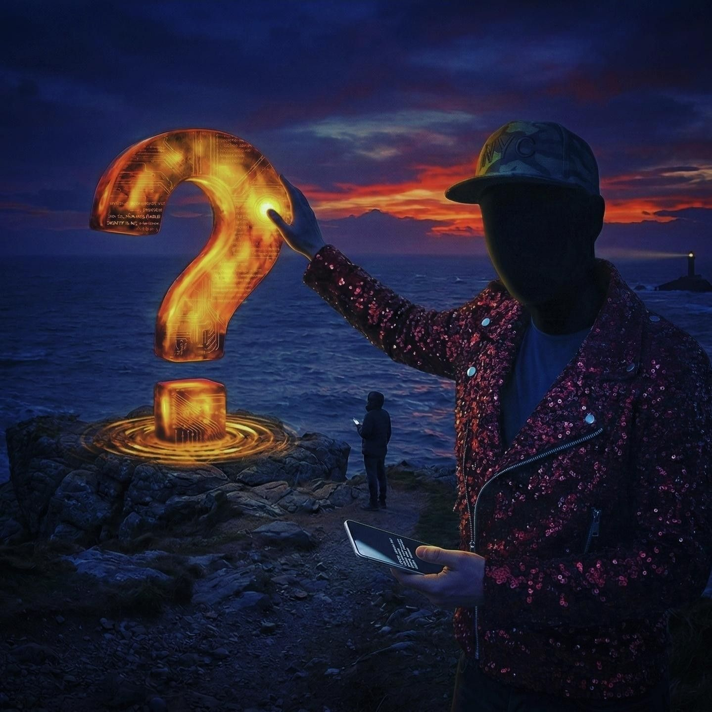

UK · Queer pop writing
AudioJoy
Yellow Aura
Listen for free
Songs written at the edge of the question. I write. Someone — or something — braver sings.

The invitation
May dreams unfold.
Ethereal pop in gold mist. Written to be worn — by a queen, a robot, or any voice that can carry the ether. What exists now is a sketch. The door is open.
Listen
Music
One co-write that Matt Pop turned into an anthem of sass — and a sketch of the next suite. Stream Shook By The Look, written with Kieran and Collin. Yellow Aura is a demo. Not the record.
Finished songs coming to Spotify soon.
Demo · sketch · 2026
Yellow Aura
Demo · sketch · Listen for free
A sketch of the suite — not the record. Gold mist, a mashup, a colour of something waiting for a voice. When a performer wears it, this comes down.
A sketch of an ascending nylon arpeggio — not the finished vocal. That part may be a robot.
Released · 2023
Shook By The Look
An anthem of sass
A co-write, and the only song the three of them made together. Kieran created the original music, wrote a verse, and sang backing vocals. AudioJoy wrote the other verses and the chorus. Collin brought a brilliant rap, backing vocals, and the arranger’s ear. Matt Pop turned the tune into a bright, spangly anthem of sass — with a sparkle borrowed, in part, from Pippa Dee.
- Kieran — original music, verse, backing vocals
- AudioJoy — verses, chorus
- Collin — rap, backing vocals, arrangement
- Matt Pop — the bright, spangly anthem


Demo · sketch · 2026
There's Something Out There
Uplifting queer pop · how high is the sky?
AudioJoy's earliest memory: three years old in 1975, looking up to see a murmuration of birds and feeling a burst of love — then wondering how high the sky really went. Written and composed here, sung by a voice braver than mine. Two sketches of the same feeling. Neither is the record.
Demo · sketch · Listen for free
Yellow Aura
Not the record. A colour of the suite, waiting for a voice. The writer stays in the wings.
01
The sketch
A demo. A mashup. A colour of the suite — not the record it might become.
02
The voice
A robot, a queen, a singer who has not arrived yet. The songs are waiting to be worn.
03
The wait
When they are ready to be sung, the people who asked will hear first.
“These songs were always meant to be worn.”
The writer
AudioJoy
A UK queer pop writing project. I am not a frontman. I write songs for people who are — for a queen, a performer, a voice that can wear sequins without flinching.

Artist bio
For the page.
AudioJoy is a British queer pop writer working from the wings. The project exists to put songs on bodies that can hold a stage — drag artists, vocalists, performers who can take a look and make it a world.
The 2023 single “Shook By The Look” is a co-write with Kieran and Collin. Matt Pop turned the tune into a bright, spangly anthem of sass — a sparkle shaped, in part, by AudioJoy’s friend Pippa Dee, a special kind of angel who worked the door at London’s Royal Vauxhall Tavern.
AudioJoy’s forthcoming suite, Yellow Aura, is ethereal pop in gold mist — being written to be worn by a queen, a robot, or whatever voice can carry it. What exists now is a sketch, not a master. AudioJoy is not a front. It is a writer. The door is open.
Dedication
For Pippa Dee. A special kind of angel. For many years she worked the door at the Royal Vauxhall Tavern — the threshold of the night, the first warmth, the person who could make a doorway feel like you were already loved. Some of the sparkle in this song is hers. I love her forever.
The list
If they find a home.
Leave an email. When Yellow Aura is more than a sketch — when someone wears it — you’ll hear it with care. No spam. Just the songs, when they have a voice.